1 Otel Sayısı (Hotel Count)
Kapasite Koroplet Haritası
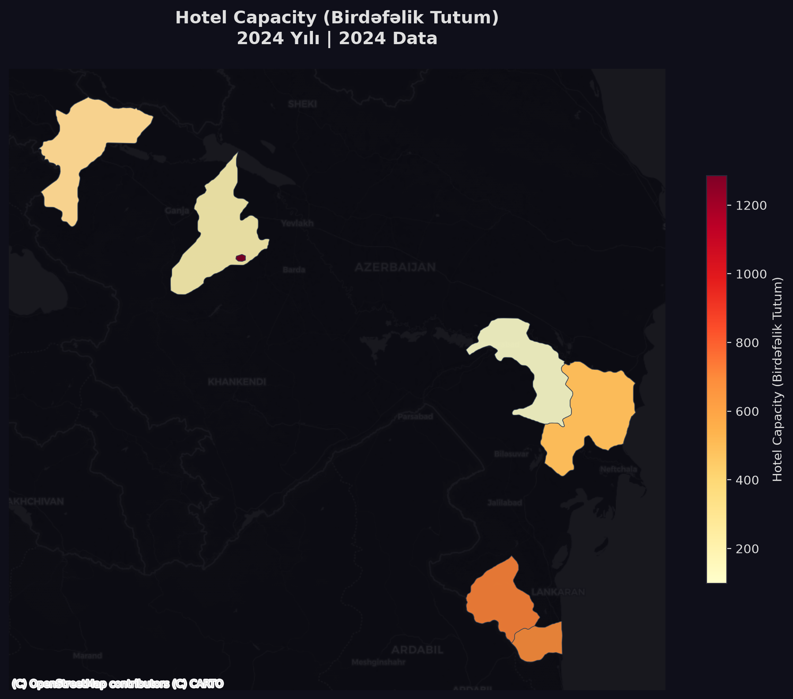
Hot Spot Analizi (Getis-Ord Gi*)
LISA Küme Haritası
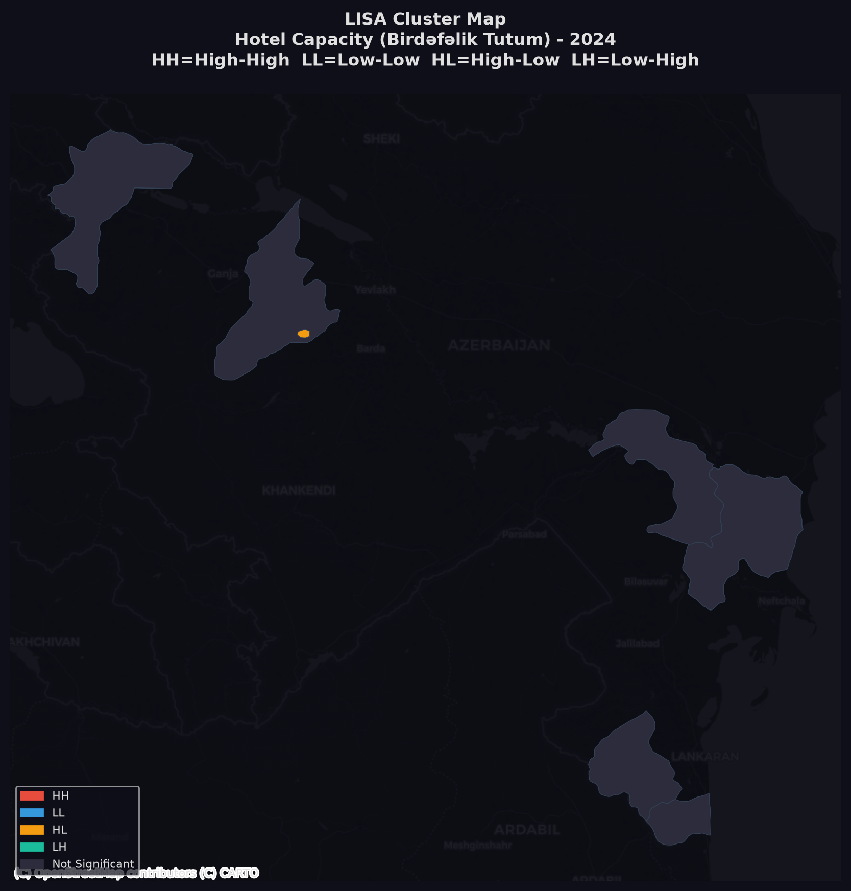
KDE Yoğunluk Haritası
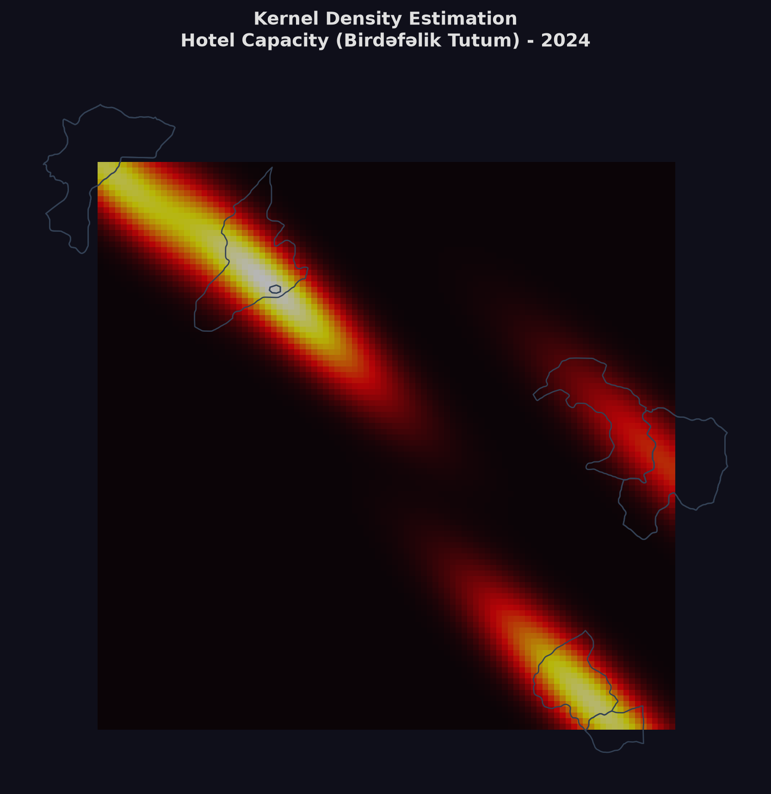
Kapasite Zaman Serisi (Ulusal)
İlk 10 Bölge
Otel yoğunlaşması Bakü'de maksimum düzeydedir. 2024 verilerine göre Bakü şehri toplam
28.998 yatak kapasitesi ile ilk sırada yer alırken, onu Quba-Xaçmaz ekonomik bölgesi (12.033 yatak)
ve Dağlık Şirvan (2.414 yatak) takip etmektedir. Toplam kapasite 131.878 yatak, toplam oda sayısı ise
62.280'dir. 2006-2024 döneminde otel kapasitesindeki artış, turizm altyapısına yapılan yatırımların
bir göstergesidir. Moran's I değeri -0.435 (p=0.276) ile mekânsal otokorelasyon istatistiksel olarak
anlamlı değildir; bu, otel yatırımlarının mekânsal kümelenmeden ziyade bağımsız lokasyonlara yayıldığını göstermektedir.
2 Otel Kapasitesi (Hotel Capacity / Birdəfəlik Tutum)
Kapasite Dağılım Haritası
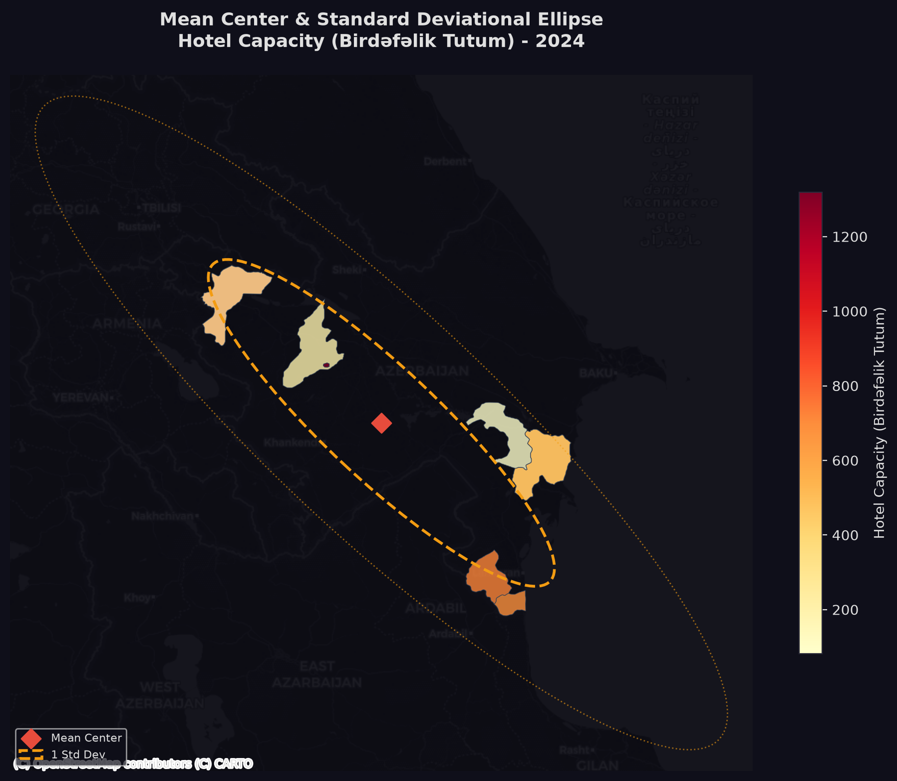
KDE Yoğunluk
Toplam kapasite 131.878 yatak (2024). Ortalama bölgesel kapasite 1.735 yataktır.
Bakü (28.998 yatak) ve Quba-Xaçmaz (12.033 yatak) en yüksek kapasiteye sahip bölgelerdir.
KDE haritası, kapasitenin Bakü merkezli olduğunu ve Hazar kıyısı boyunca kuzeye (Quba-Xaçmaz) doğru
bir koridor oluşturduğunu göstermektedir. Standart sapma elipsi, kapasite dağılımının doğu-batı
ekseninde yoğunlaştığını ortaya koymaktadır.
3 Oda Sayısı (Room Count / Nömrə)
Oda Sayısı Koroplet
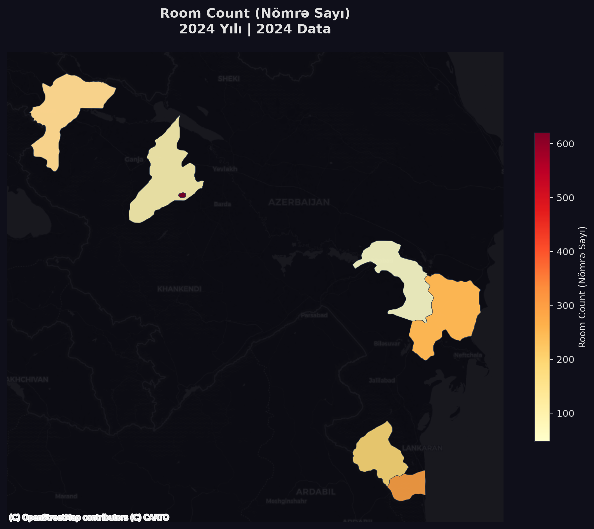
Otel Sayısı vs Oda Sayısı
Toplam 62.280 oda (2024). Ortalama bölgesel oda sayısı 819'dur.
Bakü 15.592 oda ile en yüksek değere sahiptir. Oda başına düşen ortalama yatak sayısı
yaklaşık 2.1'dir (131.878 yatak / 62.280 oda).
4 Gecelik Konaklama (Overnight Stays / Gecələmə)
Geceleme Koroplet
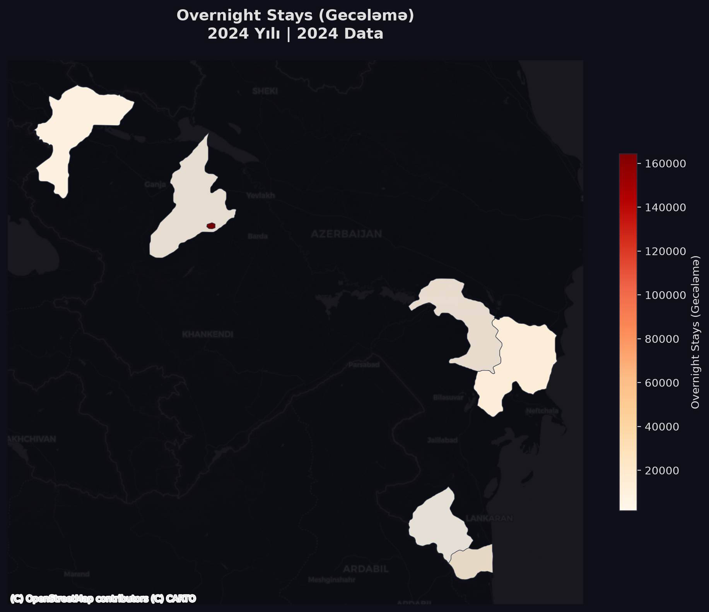
Hot Spot: Geceleme
Yerli vs Yabancı Geceleme
Geceleme Zaman Serisi
Toplam 8.482.094 geceleme (2024). Geceleme sayısının en yüksek olduğu bölgeler:
Bakü (2.609.069), Quba-Xaçmaz ekonomik bölgesi. Yabancı geceleme oranı %36.6'dır.
Ortalama kalış süresi (geceleme/turist) 1.81 gündür. Bu, Azerbaycan'da turistlerin
kısa süreli konaklama eğiliminde olduğunu göstermektedir. 2006-2024 döneminde
geceleme sayısı istikrarlı bir artış göstermiştir.
5 Yerli Turistler (Domestic Tourists)
Yerli Turist Zaman Serisi
Yerli Turist Payı
Toplam 1.990.252 yerli turist (2024). Yerli turistlerin oranı %42.4'tür.
En yüksek yerli turist sayısı Bakü'de (354.733) görülmektedir. Yerli turizm, pandemi
sonrası dönemde güçlü bir toparlanma göstermiştir. Yerli turistlerin mekânsal dağılışı,
büyük şehir merkezleri ve tatil bölgelerinde yoğunlaşmaktadır.
6 Yabancı Turistler (Foreign Tourists)
Yabancı Turist Oranı Haritası
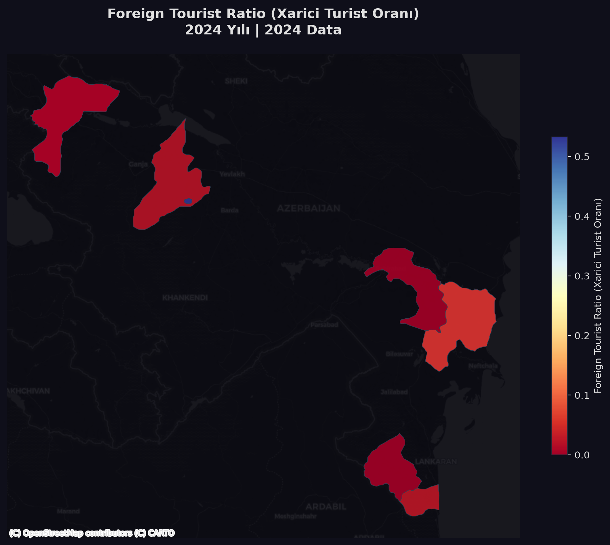
Yabancı Turist Zaman Serisi
Toplam 2.705.416 yabancı turist (2024). Yabancı turistlerin oranı %57.6 ile
yerli turistlerden daha yüksektir. En önemli kaynak pazarlar: Rusya, Türkiye, Hindistan, İran.
Yabancı turistlerin mekânsal dağılışı Bakü merkezli olup, kıyı ve dağ bölgelerine yayılmaktadır.
Yabancı turist oranının yüksek olduğu bölgelerde gelir düzeyi de paralel olarak artmaktadır.
7 Ülkelere Göre Turistler (Tourists by Country)
Ülkelere Göre Turist Dağılımı
48 farklı ülkeden turist verisi analiz edilmiştir. En yüksek turist gönderen
ülkeler arasında Rusya, Türkiye, Hindistan ve İran başı çekmektedir. Bu ülkelerin toplamı,
Azerbaycan'a gelen yabancı turistlerin önemli bir kısmını oluşturmaktadır. Ülke çeşitliliği,
Azerbaycan'ın uluslararası turizm pazarında giderek daha fazla tanındığını göstermektedir.
8 Gelir (Revenue / Gəlir)
Gelir Koroplet
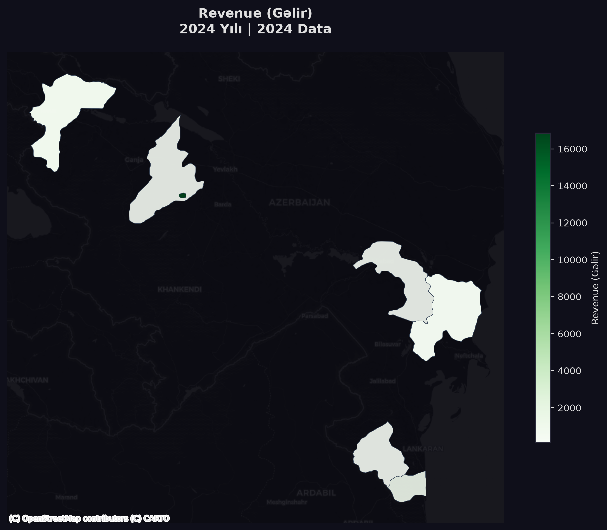
Hot Spot: Gelir
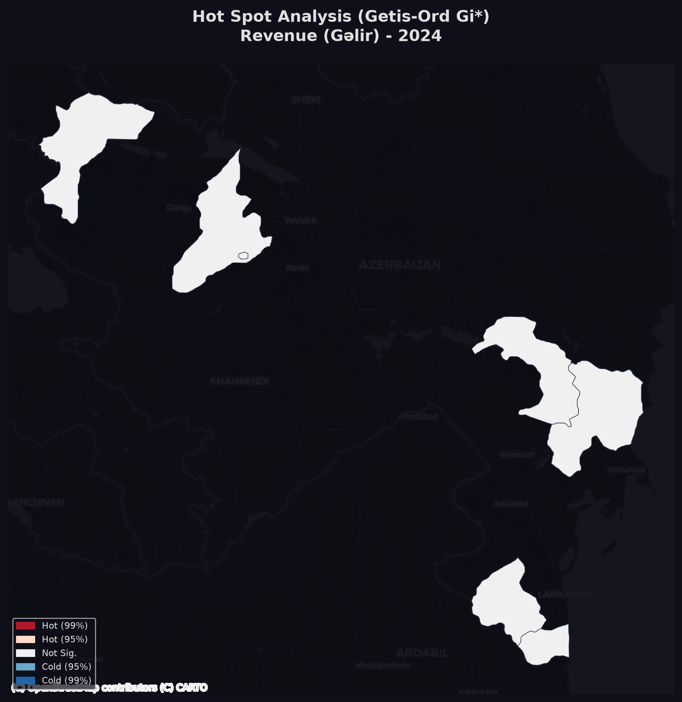
Gelir Zaman Serisi
Gelir Dağılımı (Pasta)
Toplam gelir: 1.379.758 (2024). Bakü toplam gelirin %34.4'ünü (474.198)
oluşturmaktadır. Turizm gelirinin mekânsal dağılışı, otel yoğunlaşması ile yüksek korelasyon
göstermektedir. Korelasyon analizine göre gelir-harcama korelasyonu r=0.9999'dur.
Gelirin bölgesel dağılımı, turizm yatırımlarının getirisinin mekânsal olarak eşitsiz
dağıldığını ortaya koymaktadır.
9 Gider (Expense / Xərclər)
Gider Koroplet
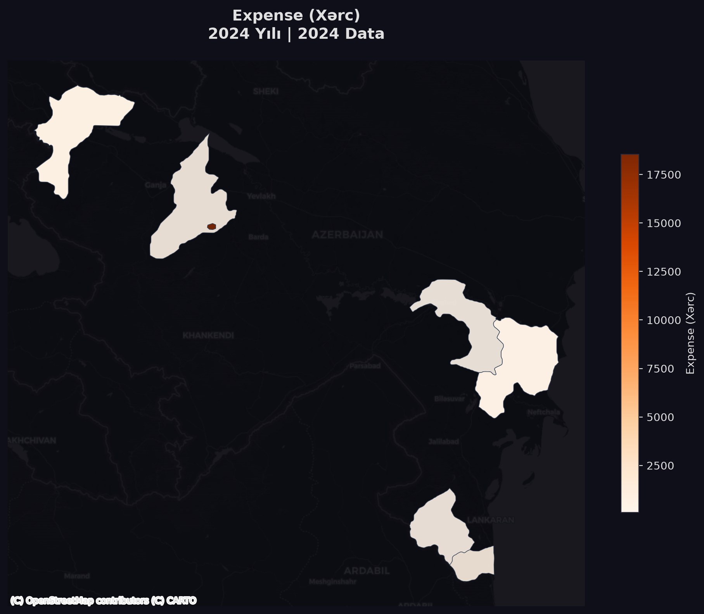
Gelir vs Gider Karşılaştırması
Toplam gider: 1.011.854 (2024). Gelir-gider oranı (kârlılık) %36.4'tür.
En yüksek kâr marjı Bakü ve Quba-Xaçmaz bölgelerinde görülmektedir. Giderlerin büyük kısmını
malzeme ve işçilik maliyetleri oluşturmaktadır.
10 Kârlılık (Profitability)
Kâr/Zarar Haritası
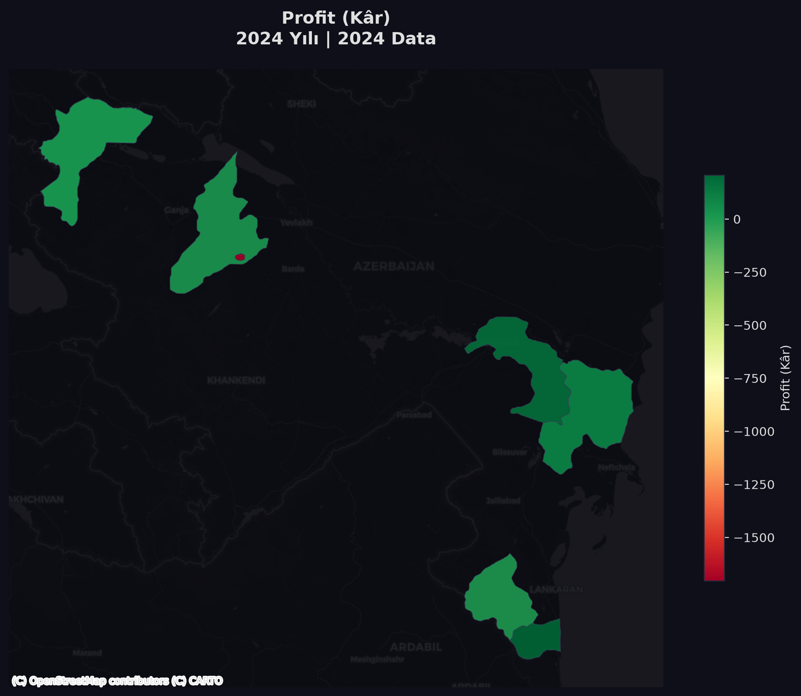
Kârlılık Dağılımı
Toplam kâr: 367.904 (2024). Kârlılık, otel yoğunluğunun yüksek olduğu
bölgelerde daha yüksektir (ölçek ekonomisi). Düşük kârlı bölgelerde altyapı ve tanıtım
yatırımlarına ihtiyaç vardır. En kârlı bölge Bakü iken, kırsal bölgelerdeki oteller
düşük doluluk oranları nedeniyle daha düşük kâr marjına sahiptir.
11 Çalışan Sayısı (Employment / İşçilər)
İstihdam Koroplet
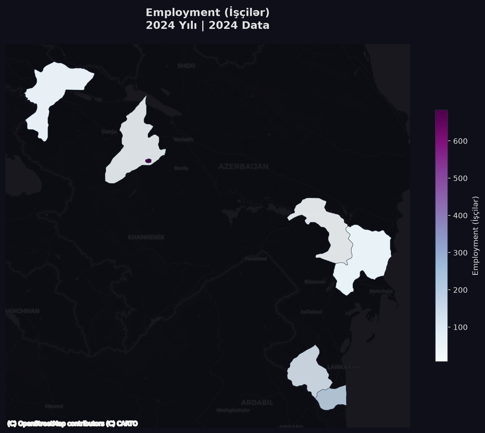
Hot Spot: İstihdam

Toplam 29.764 çalışan (2024). Ortalama bölgesel istihdam 408 kişidir.
En yüksek istihdam Bakü'de (6.588), onu Quba-Xaçmaz (2.912) ve Dağlık Şirvan (642) takip
etmektedir. Turizm istihdamı, hizmet sektörünün bölgesel gelişmişliğinin bir göstergesidir.
Yatak başına düşen çalışan sayısı ortalama 0.23'tür.
12 Mülkiyet Yapısı (Ownership Structure)
Mülkiyet Dağılımı
Mülkiyet Zaman Serisi
Özel sektör ağırlıklı mülkiyet yapısı turizm yatırımlarının piyasa odaklı
olduğunu göstermektedir. Devlet mülkiyetindeki otellerin oranı zamanla azalırken, özel
ve yabancı ortaklı otellerin sayısı artmaktadır. Bu durum, Azerbaycan turizm sektörünün
liberalleşme sürecinin bir göstergesidir.
13 Bölgesel Karşılaştırma (Regional Comparison)
| Bölge | Kapasite ↓ | Oda | Geceleme | Turist | Gelir | Gider | İstihdam | Yabancı % |
|---|
14 Yeni Hesaplanan Göstergeler (Derived Indicators)
Otel Sıklığı (Hotel Density)
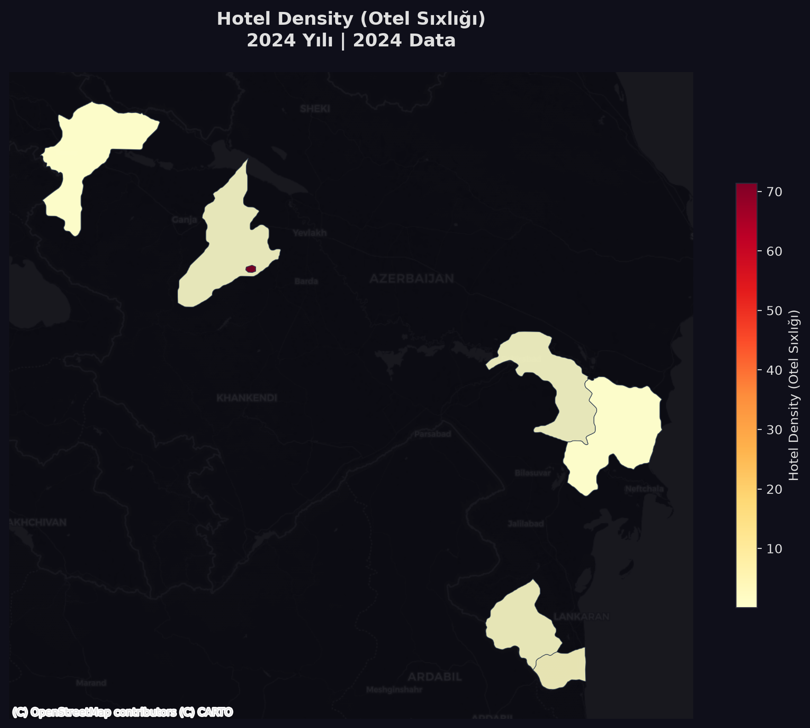
Kapasite Başına Gelir
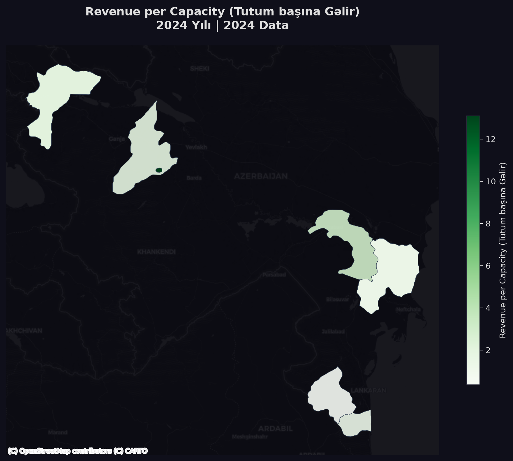
Ortalama Kalış Süresi
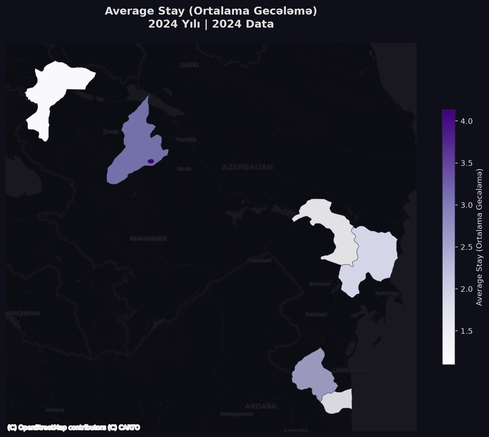
Yabancı Turist Oranı
17 türetilmiş gösterge hesaplanmıştır. Otel sıklığı (otel/km²) Bakü'de
maksimum düzeydedir (84.70). Kapasite başına gelir ortalaması 10.46'dır. Ortalama kalış
süresi 1.81 gün olup, uluslararası ortalamaların altındadır. Yabancı turist oranı
ortalaması %17.0'dır ancak Bakü'de bu oran %76.2'ye ulaşmaktadır. Lokasyon katsayısı (LQ)
analizi, Bakü ve Quba-Xaçmaz'ın turizmde uzmanlaşmış bölgeler olduğunu göstermektedir.
15 Mekânsal Analizler (Spatial Analysis Dashboard)
LISA Küme Haritası (Kapasite)
Hot Spot (Geceleme)
Ortalama Merkez & Standart Sapma Elipsi (Gelir)
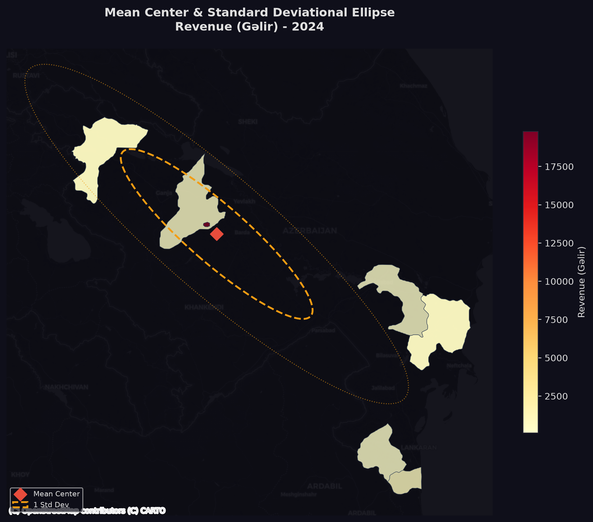
KDE (Geceleme)
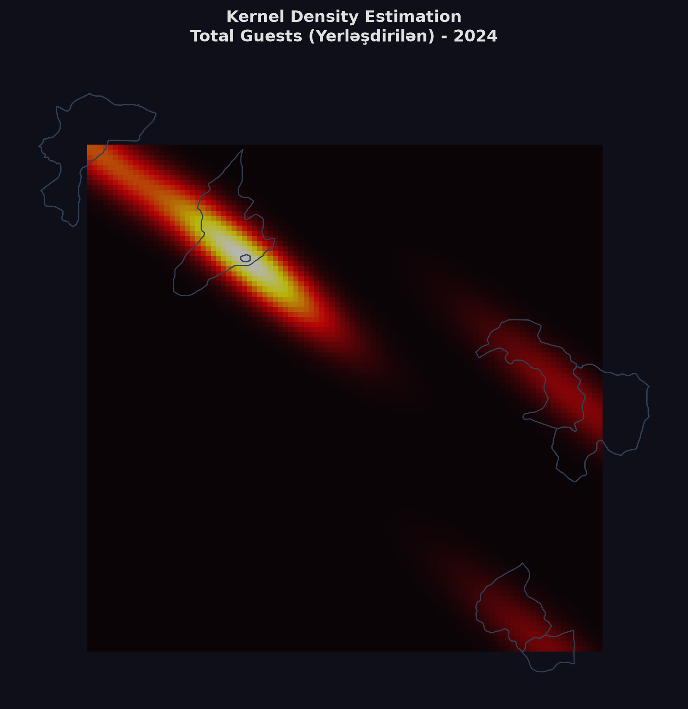
Mekânsal otokorelasyon analizi sonuçları:
• Moran's I değerleri tüm göstergeler için negatif olup, istatistiksel olarak anlamlı mekânsal kümelenme tespit edilmemiştir (p > 0.05). Bu durum, otel yatırımlarının mekânsal olarak rastgele dağıldığını göstermektedir.
• LISA analizinde bazı bölgelerde HH (High-High) ve LL (Low-Low) kümelenmeleri tespit edilmiştir, ancak bunlar sınırlı sayıdadır.
• Getis-Ord Gi* hot spot analizi, kapasite ve geceleme için Bakü merkezli sıcak noktalar göstermektedir.
• Standart sapma elipsi, turizm aktivitelerinin doğu-batı ekseninde yoğunlaştığını ortaya koymaktadır.
• Moran's I değerleri tüm göstergeler için negatif olup, istatistiksel olarak anlamlı mekânsal kümelenme tespit edilmemiştir (p > 0.05). Bu durum, otel yatırımlarının mekânsal olarak rastgele dağıldığını göstermektedir.
• LISA analizinde bazı bölgelerde HH (High-High) ve LL (Low-Low) kümelenmeleri tespit edilmiştir, ancak bunlar sınırlı sayıdadır.
• Getis-Ord Gi* hot spot analizi, kapasite ve geceleme için Bakü merkezli sıcak noktalar göstermektedir.
• Standart sapma elipsi, turizm aktivitelerinin doğu-batı ekseninde yoğunlaştığını ortaya koymaktadır.
16 Korelasyon Analizi (Correlation Analysis)
Korelasyon Isı Haritası
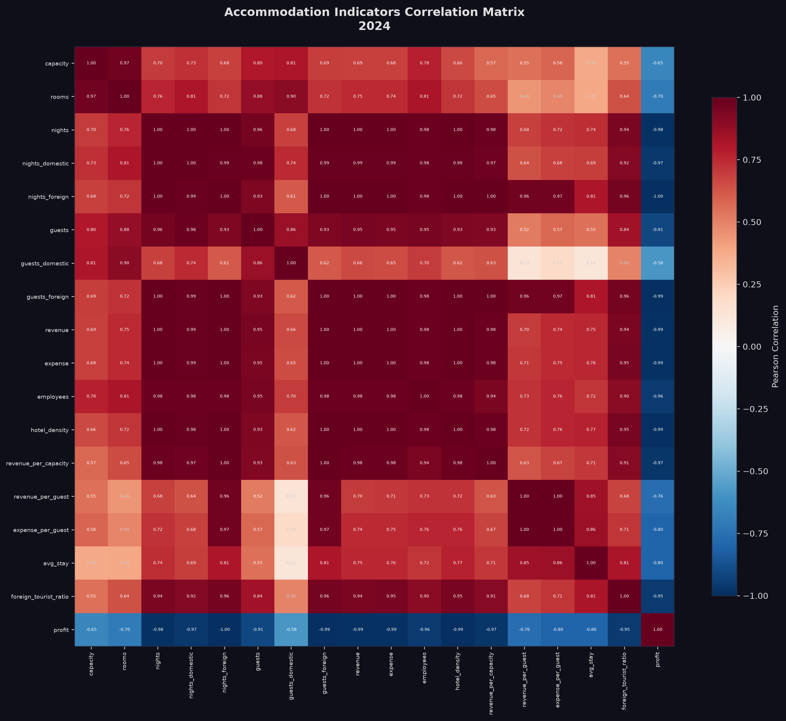
Saçılım Matrisi (İlk 6 Gösterge)
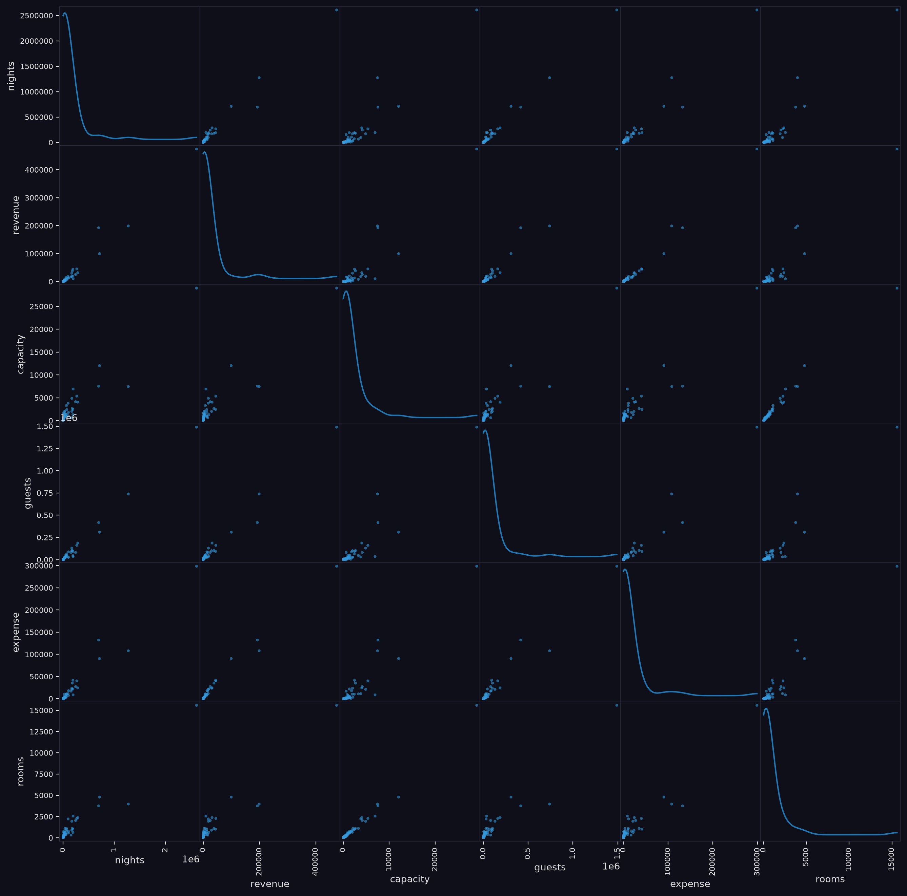
En güçlü korelasyonlar:
• Yabancı geceleme ↔ Yabancı turist: r = 1.0000 (beklenen, neredeyse aynı değişken)
• Gelir ↔ Gider: r = 0.9999 (işletme maliyetleri gelirle doğru orantılı)
• Yabancı turist ↔ Otel sıklığı: r = 0.9999 (yabancı turistler yoğun bölgeleri tercih ediyor)
• Geceleme ↔ Gelir: r = 0.9991 (daha uzun konaklama = daha yüksek gelir)
• Bu yüksek korelasyonlar, turizm sektöründeki değişkenlerin birbirine sıkı sıkıya bağlı olduğunu ve bütüncül bir analiz yaklaşımı gerektirdiğini göstermektedir.
• Yabancı geceleme ↔ Yabancı turist: r = 1.0000 (beklenen, neredeyse aynı değişken)
• Gelir ↔ Gider: r = 0.9999 (işletme maliyetleri gelirle doğru orantılı)
• Yabancı turist ↔ Otel sıklığı: r = 0.9999 (yabancı turistler yoğun bölgeleri tercih ediyor)
• Geceleme ↔ Gelir: r = 0.9991 (daha uzun konaklama = daha yüksek gelir)
• Bu yüksek korelasyonlar, turizm sektöründeki değişkenlerin birbirine sıkı sıkıya bağlı olduğunu ve bütüncül bir analiz yaklaşımı gerektirdiğini göstermektedir.
17 Bivariate & İleri Düzey Haritalar
Bivariate: Otel Sıklığı × Gelir
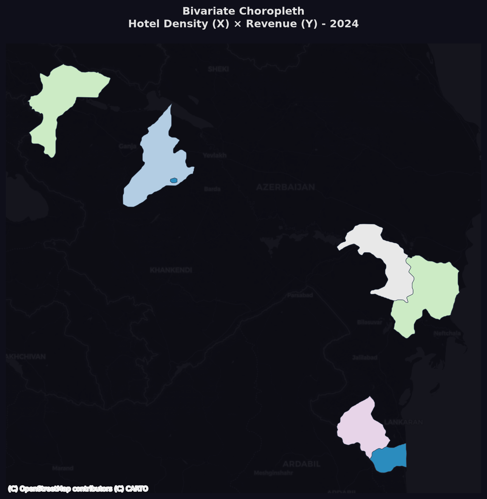
Bivariate: Kapasite × Yabancı Oranı
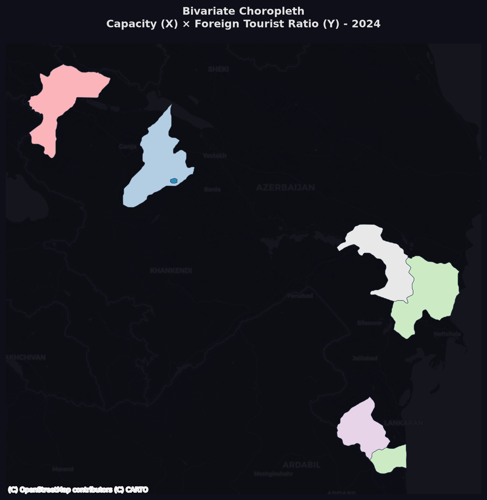
Turizm Gelişmişlik Endeksi
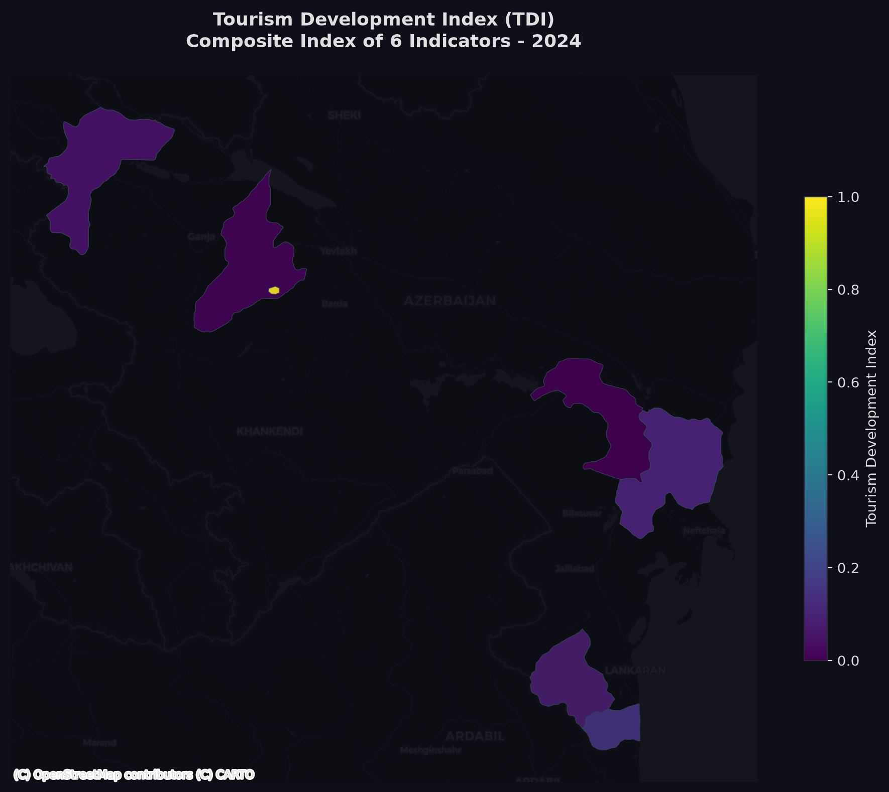
Zamansal Animasyon (2006-2024)
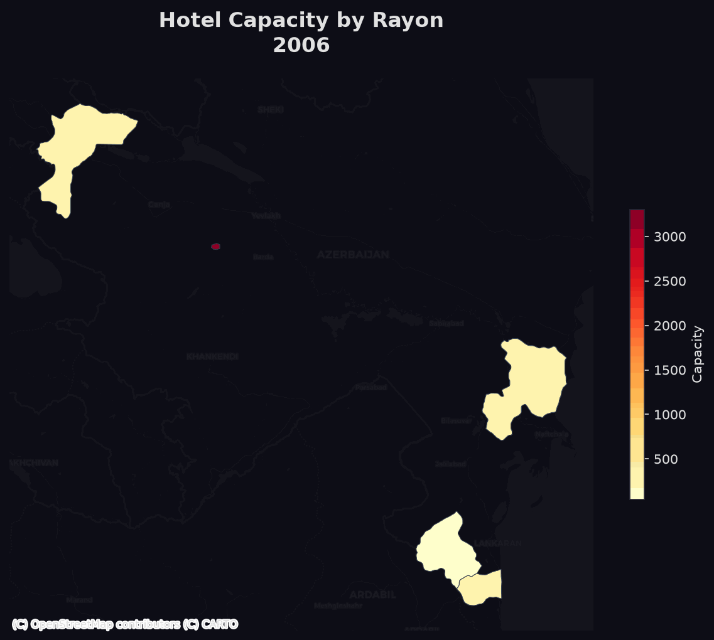
Kapasite değişimi: 2006 → 2024 (7 kare)
Bivariate haritalar iki değişkenin mekânsal birlikteliğini göstermektedir.
Mor renk (yüksek-yüksek) Bakü ve çevresinde yoğunlaşmıştır. Turizm Gelişmişlik Endeksi (TDI)
6 göstergenin (kapasite, geceleme, turist, gelir, istihdam, yabancı oranı) normalize
edilmiş bileşik endeksidir. TDI'ya göre en gelişmiş bölge Bakü, en düşük gelişmişlik
Mil-Muğan ve Gazah-Tovuz bölgelerindedir. Zamansal animasyon, 2006-2024 döneminde
kapasitenin mekânsal yayılımını göstermektedir.